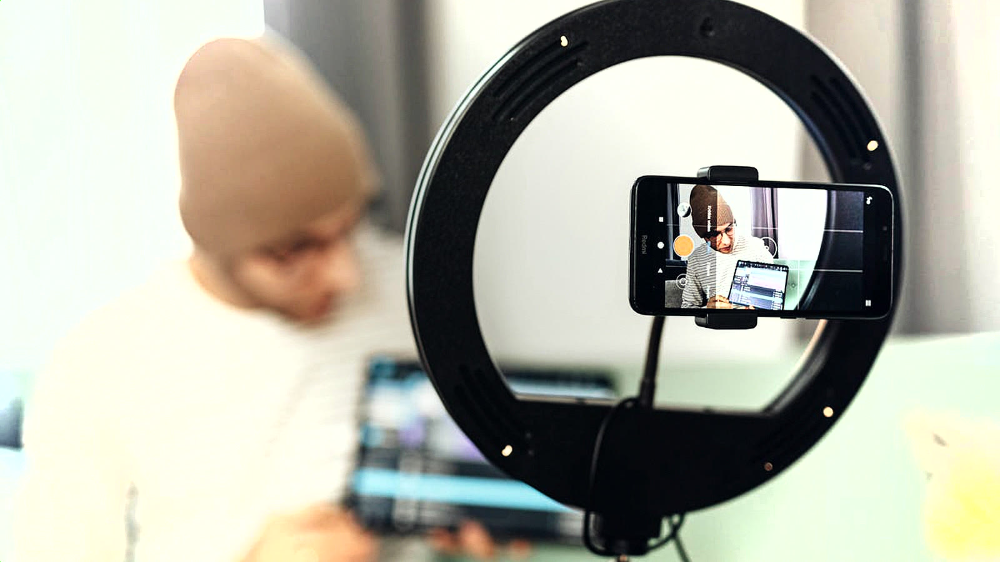
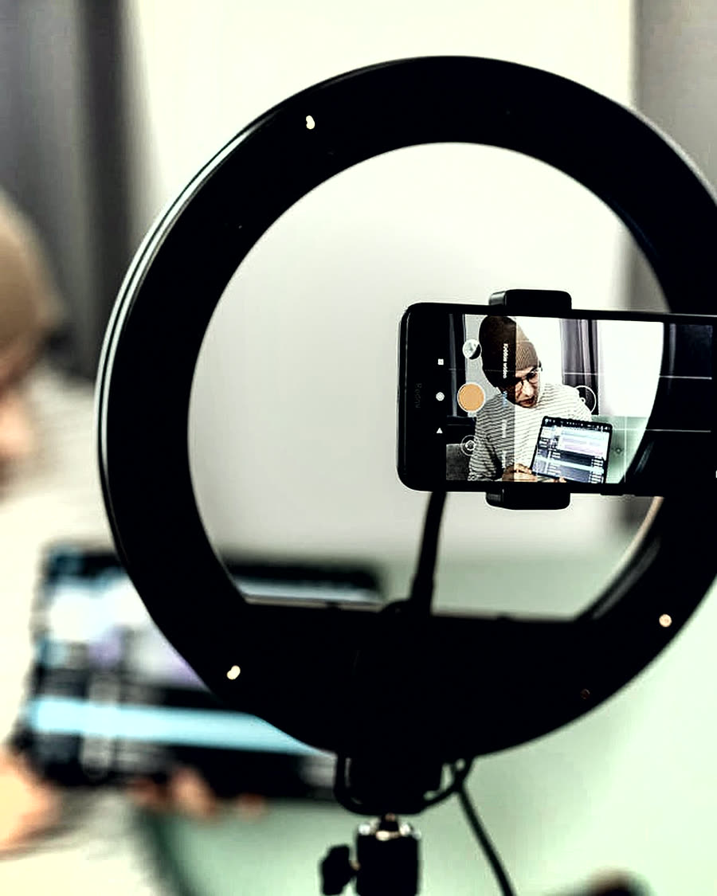
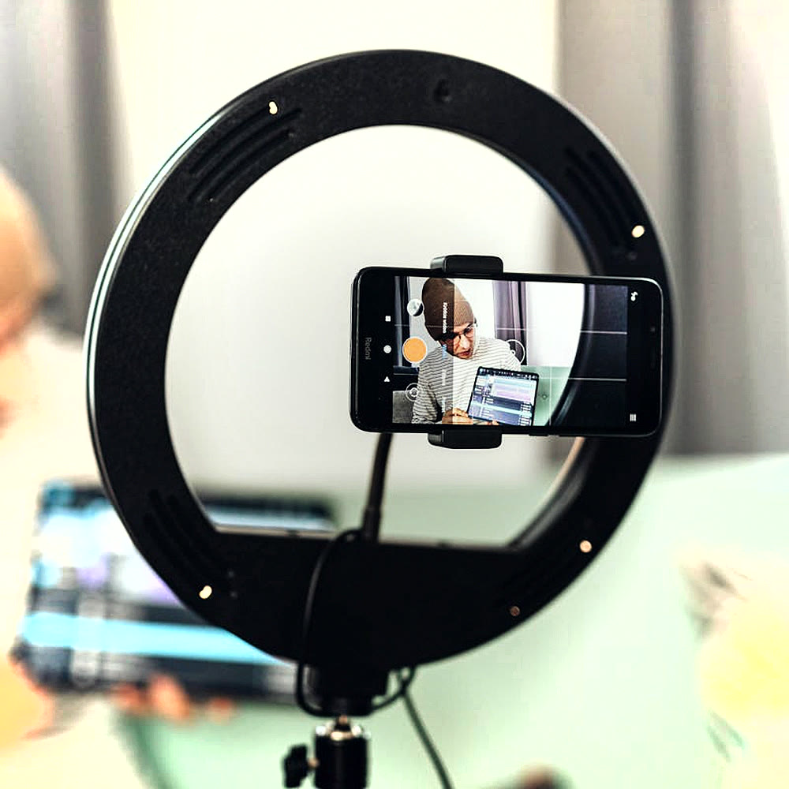

Personal brand
The Front Room
A founder who knew they should be posting, hated being filmed, and had one free afternoon.

- Client
- The Front Room
- Sector
- Personal brand
- Role
- Director, DOP, editor
- Year
- 2026
The brief
What they needed
The founder had been told for two years that they needed to be on camera. Every previous attempt had been stiff, over-lit and abandoned after three posts.
The brief was to make an afternoon of filming produce a quarter of short-form content — and to make it feel like a conversation rather than a presentation.
The approach
How it was shot
No autocue, no script. A list of twelve questions, a comfortable room, two cameras and an afternoon of talking. Most of the usable material came from the answers given after the first, careful one.
The edit pulled sixteen clips out of that afternoon, each with its own hook, all graded and captioned so they could be scheduled and forgotten about.
Frames
From the shoot



Delivered
What came out of it
- 16 short-form clips
- Burned-in captions
- 1 longer interview cut
- Portrait stills
- Vertical & square exports
- Scheduling-ready folder
Want something like this?
Tell Harrison what you are launching and roughly when. A reply usually lands the same day.